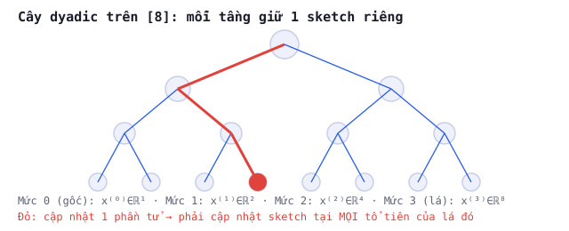

BUỔI 12 · Cấu trúc dữ liệu
Cấu trúc cây nhị phân & rank/order statistics
Cây nhị phân là xương sống của q-digest, MRL, KLL (quantile sketches) và thủ thuật dyadic cho heavy hitters.
PHẦN 1/2
01
Cây nhị phân & rank
- $\mathrm{rank}(x)$: số phần tử $\le x$
- Cây nhị phân hoàn chỉnh: $2^{L+1}-1$ nút
- Ý tưởng nén: gộp bớt để tiết kiệm bộ nhớ
Rank và quantile
Bài toán quantile: trả lời $\mathrm{rank}(x)$ hoặc $\mathrm{quantile}(\phi)$ với sai số $\pm\varepsilon n$,
dùng ít hơn hẳn $O(n)$ bộ nhớ. q-digest, MRL, KLL là 3 hướng giải khác nhau, đều dựa trên cây nhị phân.
Ý tưởng nén trên cây
q-digest: mỗi đỉnh cây có bộ đếm, gộp 2 đỉnh anh em vào đỉnh cha khi tổng đủ nhỏ (điều kiện nén
$\le \varepsilon n/L$) — tiết kiệm bộ nhớ, đổi lấy sai số có kiểm soát (tổng sai số tích luỹ $\le
\varepsilon n$ vì chỉ có $L$ tổ tiên cho mỗi truy vấn).
Bẫy
MRL nén tất định (luôn giữ vị trí lẻ) có thể tích luỹ
lỗi hệ thống; KLL sửa bằng cách
nén ngẫu nhiên (chọn ngẫu nhiên vị trí lẻ/chẵn) — biến sai số
thành tổng có dấu ngẫu nhiên, áp dụng được Khintchine (buổi 10) để chặn chặt hơn nhiều.
PHẦN 2/2
02
Case study: thủ thuật dyadic cho heavy hitters
- Cây nhị phân trên [n], mỗi tầng 1 sketch riêng
- Cập nhật: mọi tổ tiên của lá phải cập nhật
- Truy vấn: chỉ đi vào nhánh có giá trị đủ lớn
Tăng tốc truy vấn heavy hitters
Xây cây nhị phân hoàn chỉnh trên $[n]$: mỗi tầng $j$ giữ 1 sketch CountMin cho vector đã "gộp đôi"
$2^j$ lần. Cập nhật 1 phần tử phải cập nhật sketch ở MỌI tầng (mọi tổ tiên của lá tương ứng). Bù lại,
truy vấn "chỉ đi tiếp vào nhánh có giá trị đủ lớn" giảm thời gian truy vấn từ $O(n\log(n/\delta))$
xuống $O(k\log(n/\delta)\log n)$ — minh chứng thực tế cho cây nhị phân + union bound (buổi 5) kết hợp.
🔗 Liên hệ lập lịch
Ước lượng phân vị của một luồng dữ liệu là
bài toán nền để biết phân phối $p_j$ trước khi chọn SPT/Smith, hoặc để theo dõi phân vị thời gian hoàn thành
(SLA) trong một scheduler thật. Xem buổi
Lập lịch 04 — FIFO, SPT, Smith.
